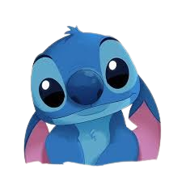
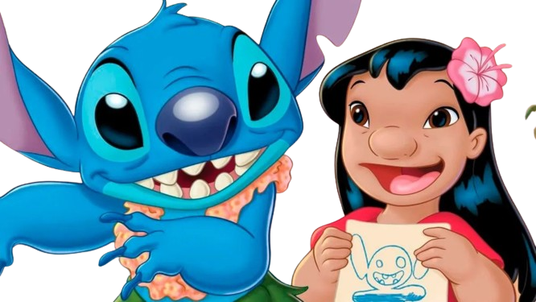
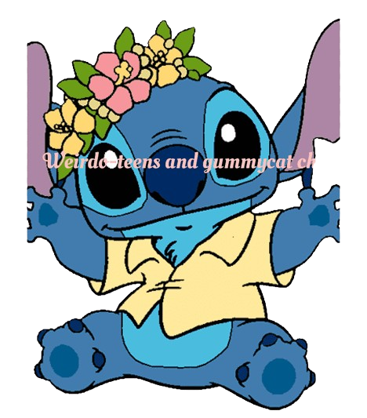
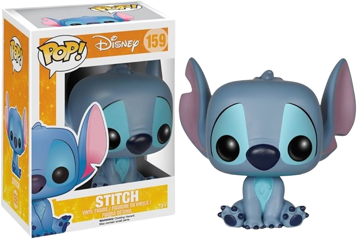
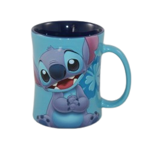
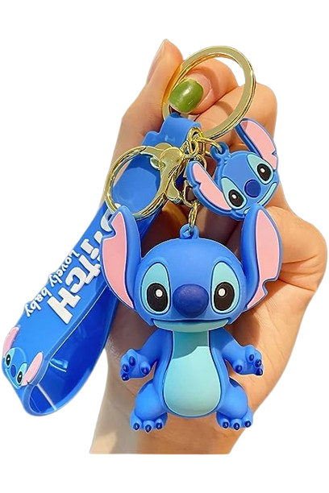

Productos de stich.

stitch mejor conocido como el experimento 626 es considerado un villano en la primera pelicula ya que fue creado pra provocar caos en la galaxia se caracteriza por su mal genio y su comportamiento malicioso rasgos quer lo ayudaron a escapar de la guardia galactica. Termina llegando a la tierra y lo arroyan unos conductores que lo confunden con un perro y es llevado a la perrera donde lo adopta su mejor amiga lilo como su cachorro stitch se pone muy contento por tener una familia.


Productos de stitch.
Funco POP De Stitck Disney
Taza De Stitch
Llavero de stitch.